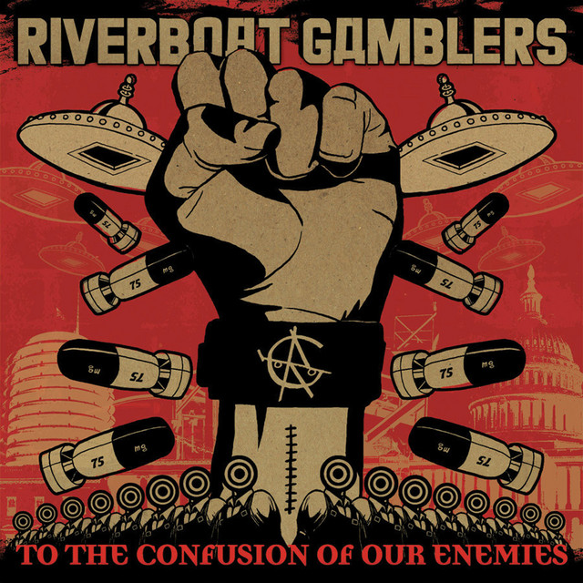

31 Days of Punk
The punk album for 12/28/2025 is:
Riverboat Gamblers
by To The Confusion Of Our Enemies
Ben's thoughts
“Unicorn shave your horn, grow your wings and do your thing, Pegasus grow your horn, shed your wings and beau-nicorn, Come together be a donkey, Come together in the odyssey, Come together, its big magic sun trash with the gamblers.”
We could not top the month off without one more local pick. That means today we are covering The Riverboat Gamblers, a bare-bones fusion punk band from the early 2000s. We found these guys through an advertisement for an upcoming show they have going on in February, 2026. Upon first listen, their music blew my brain to pieces. It is riot and counter-culture to the core. Originally from Denton, the band would eventually find their home in Austin, Texas. Through their rocky career 1997 to now they have experienced success, downfall, breakups, and reunions. Today they still run with a slightly tweaked lineup.
The album we are covering today is To The Confusion of Our Enemies, a pedal to the metal ride that left me wanting even more than its monster track length. The album has that classic protest sound, meant as a rally cry for all those unable to make their voice heard. The album deals with societal angst, independence above anything, and the loss of identity. For many unable or unwilling, the album may just sound like some Green Day copycat slop album, however the writing in each song is profoundly individual. I was mighty impressed with the level of craftsmanship that went into this piece. In a time when this kind of music could get radio time without the need for detailed effort, it is reassuring to know that The Riverboat Gamblers took their duty very seriously, a care for art over commercial success.
This 2006 LP would prove to be their most successful, and while these guys would never become a household name, they have certainly etched their way into the hearts of my brother and I. Fadi El-Asaad, Mike Wiebe, and Patrick Lillard did what they set out to do, create music in near complete contrast to the mainstream emo music of the day, how punk rock of them.
Connor's thoughts
It’s fast, it’s wild, it’s out of Denton, Texas and reeks of punk. The Riverboat gamblers released “To The Confusion Of Our Enemies” in 2006 as a high octane statement toward the art of rebellious hijinks and mayhem. Using a clever 5 piece band to allow crazy guitar hooks and even better vocals, with their standout trait being the ludicrously fast lyrics. It adds a level of intensity to the music that helps amplify their live performances, which from my research are notorious for their high energy. The album itself benefits from this as well, with the perfect use of guitar tricks and headbanging drums to enhance that bar-fightin’ style they seem to want. That being said, they infuse the speedy nature of pop-punk favorites like Green Day, and many draw comparisons of their heavy nature and their influence, “The Candy Snatchers”. No matter who you want to compare them to, the band separates itself from most, forming a unique sound with their gritty yet clear tones that rings across the Austin area (where they now reside), and the country.
Texas. Producing great artists in every genre at all points in time, and The Riverboat Gamblers take that “Everything is bigger in Texas” motto to heart with their live energy and sound. “To The Confusion Of Our Enemies” surprised me in more ways than one, reminding me of the pop punk I adore while keeping the heavy bass and grimey voice you hear in that narrow area of inner-city rock (The Flatliners, Flatfoot 56, etc…). It reflects the soul of what makes punk fun, yelling into microphones about the “Gamblers” in the white house, or maybe the fear of facing your fate. Regardless, The Riverboat Gamblers exert in buckets the energy in this album required for their pedal to the metal performances, and I thoroughly enjoyed all 14 tracks of it.
Run to your nearest device, and feel the gritty rhythm of this 5 piece Texas gem and their third record, “To The Confusion Of Our Enemies”.
Listen on Spotify: